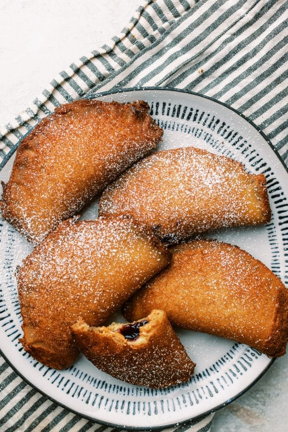

Fried Peanut Butter and Jelly Sandwich

Description
Savory, sweet, and crispy!
Just roll out some bread, fill it half way with peanut butter and jelly, crimp close or fry.
Takes 10 minutes and serves 1
Ingredients
- 4 slices of white bread
- 1/4 cup of peanut butter
- 1/4 cup of jelly
- 2 cups of cooking
Steps
- Preheat a cast iron skillet or fryer to 375 F
- Flatten your bread with a rolling pin, spread half the slice of bread with peanut butter, the other half with your favorite jelly.
- Fold in half and crimp the edges. Optionally you can use a tool like an empanada press or an uncrustable maker.
- Fry for about 1-2 minutes until golden brown flipping halfway if not fully submerged.
- Let it cool on a wire rack for a couple minutes; sprinkle with powdered sugar and enjoy!